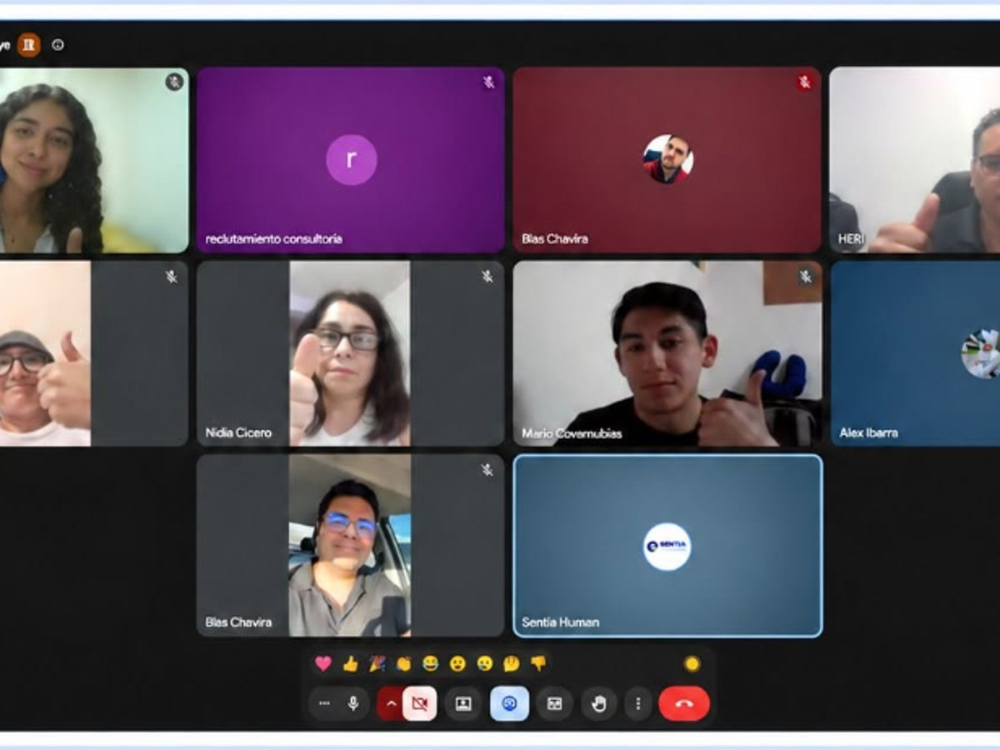
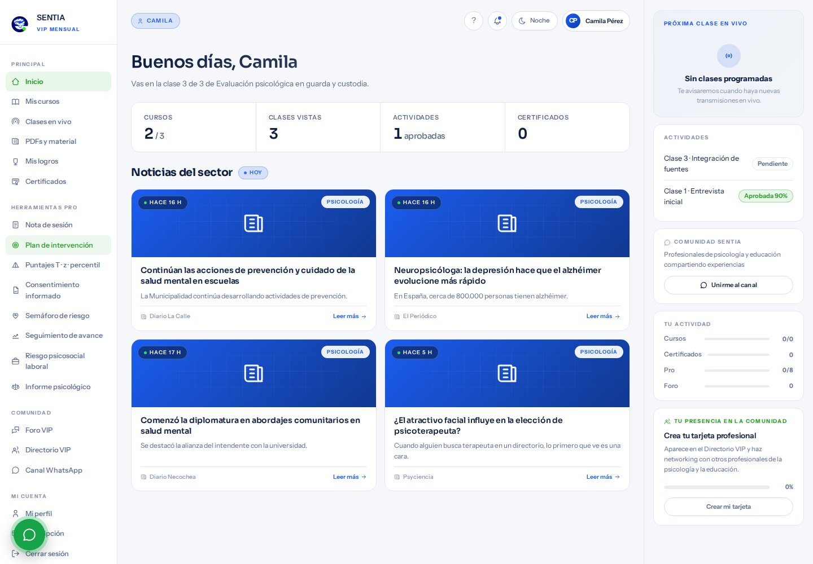

Psicología, educación, neurociencias y desarrollo humano. Clases en vivo con especialistas, materiales listos para usar y certificado con folio verificable.
Formación breve y concreta para quienes trabajan con personas: contextos clínicos, educativos, familiares y organizacionales.
Programas cortos por área de trabajo, con lo que sí vas a usar.
En vivo con especialistas o cuando puedas, con la grabación.
Con folio y código QR, verificable en línea por quien lo pida.
Conectamos fundamentos teóricos con herramientas que se usan en contextos clínicos, educativos, familiares y organizacionales.
Evaluación, diagnóstico e intervención con base en evidencia.
Herramientas para docentes dentro y fuera del aula.
Competencias emocionales para organizaciones más sanas.
Bienestar, vínculos y crecimiento a lo largo de la vida.
Cada curso incluye clases en vivo, grabación, materiales descargables, comunidad y certificado con folio verificable.

Grupos reducidos, clases en vivo y espacio para preguntar sobre casos reales. Esta es una de las sesiones que hemos cerrado, del curso People Analytics: indicadores, rotación y decisiones de talento.
Te compartimos fecha, horario, temario y forma de pago. También puedes escribirnos directo por WhatsApp.
Una membresía con acceso a la biblioteca completa, clases en vivo, herramientas listas para tu práctica y certificados con folio verificable.
